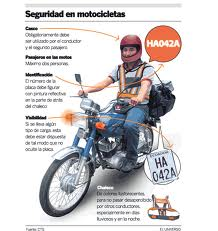
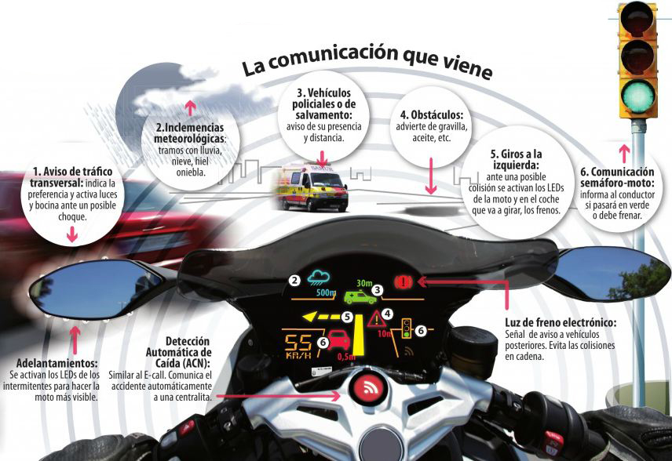

Seguridad
De acuerdo con el departamento de transporte de los Estados Unidos en el año 2005 hubo 18,62 accidentes fatales por cada 100.000 vehículos. Para las motocicletas esta cifra fue de de 75,19 por 100.000, o unas 4 veces la tasa absoluta por vehículo (sin contar kilometrajes) de los automóviles. Es de suma importancia mencionar que además del casco debidamente certificado por la norma "DOT" también se debe de portar en todo momento: chamarra de cuero o materiales sintéticos, guantes y botas altas. Esto con el fin de disminuir lesiones graves en caso de accidente. La misma fuente indica que la tasa de siniestralidad contando kilometrajes fue de 1,56 muertes por cada 100 millones de millas por vehículo para automóviles de turismo, mientras que para motocicletas fue de 43,47 (28 veces superior).1 En el 2007 la mortalidad por milla recorrida fue 37 veces mayor en motocicletas que en automóviles2 Relativamente un nuevo dispositivo de seguridad que ya está disponible es una chaqueta de airbag inflable. Un motociclista puede usar una chaqueta de bolsa de aire que está atado a la motocicleta, por lo que si él o ella se lanza desde la motocicleta durante una colisión, la chaqueta se infla automáticamente para proporcionar un cojín para el piloto. Esto disminuirá la lesiones internas a un motociclista que a menudo puede ser fatal superior del cuerpo y. La idea de una chaqueta / chaleco airbag fue inventado por Straub Tamás que solicitó la patente húngara en 1976  Para evitar cualquier eventualidad, la firma Harley Davidson da 10 consejos para que “ruedes” tu motocicleta de la mejor manera:
1. Uso de casco. Éste elemento te protegerá en caso de una caída o un choque. Ten en cuenta que, además de protegerte de cualquier lesión potencial, reduce el ruido del viento. El uso del casco puede salvar tu vida.
2. Motocicleta en óptima condiciones. Asegúrate que tu moto esté en buenas condiciones antes de salir por las calles y/o carreteras. Revisa neumáticos, luces, embrague, espejos, y frenos. No debe existir algún problema mientras conduces. Te recomendamos que lleves tu motocicleta con un mecánico para que él le dé un servicio completo.
3. Atención. Cuando estés a punto de arrancar en un semáforo, aunque esté en verde, SIEMPRE verifica que ningún vaya a cruzar, la probabilidad de chocar con otro vehículo “apresurado” pone en riesgo tu vida.
4.Control de freno. Cuando te acerques a un cruce, modera la velocidad, de manera que puedas detenerte rápidamente en caso necesario. Tienes que buscar con la mirada otros vehículos o peatones que puedan representar peligro, si sabes de dónde provienen podrás dirigir tu atención hacia la trayectoria sin problema.
5.Ve y hazte ver. Revisa y comprueba que tus luces estén en perfecto funcionamiento, sobre todo al circular por la noche o en lugares donde las condiciones de luz sean nulas.
6.Distancia. Al circular entre coches, procura mantener una distancia segura de tal forma que los automóviles puedan verte y te permita reaccionar ante maniobras imprevistas por ellos y así evitar un posible choque, un ligero roce con otro automóvil es capaz de provocar una peligrosa caída.
7.No tan rápido. En el tráfico y si los coches están parados, procura circular a poca velocidad (máximo a 20 km/h), así podrás frenar a tiempo en caso de que abran una puerta (otro de los accidentes “clásicos” en la ciudad).
8.Avisa. Los retrovisores, intermitentes y cambios de dirección, fueron inventados por algo, úsalos SIEMPRE que hagas un cambio de dirección así como para comprobar de reojo que no haya un vehículo en paralelo a tu moto o ligeramente retrasado.
9.Respeto. No circulas solo, hay peatones, vehículos, animales y objetos, debes poner atención en aquellos que puedan aparecer súbitamente en tu trayectoria, como es el caso de las calles con vehículos estacionados y evitar cualquier atropellamiento.
10.Responsabilidad. NUNCA manejes bajo los efectos del alcohol, siempre hazlo tranquilo y con mucha seriedad.

| INICIO |